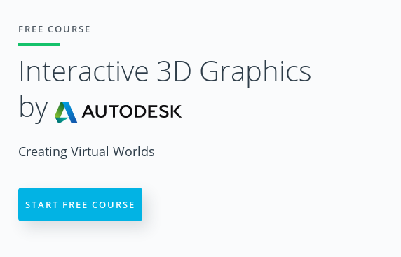

Lesley Lai
lesleylai.info | github.com/LesleyLai | www.linkedin.com/in/lesley-lai/
President of CU Computer Graphics Group
I love Computer Graphics.
Slides available at lesleylai.github.io/BasicsOfThreeJS/
Hit Ctrl-U to view the source code.
Create a Camera
const camera = new THREE.PerspectiveCamera(70,
window.innerWidth / window.innerHeight,
1, 1000 );
camera.position.z = 400;
Make a Scene
const scene = new THREE.Scene();
Create a Cube with a Texture
const texture = new THREE.TextureLoader().load('textures/crate.gif');
const geometry = new THREE.BoxBufferGeometry(200, 200, 200);
const material = new THREE.MeshBasicMaterial({ map: texture });
const mesh = new THREE.Mesh(geometry, material);
scene.add(mesh);
and some window resize code:
function onWindowResize() {
camera.aspect = window.innerWidth / window.innerHeight;
camera.updateProjectionMatrix();
renderer.setSize( window.innerWidth, window.innerHeight );
}
function animate() {
requestAnimationFrame(animate);
mesh.rotation.x += 0.005;
mesh.rotation.y += 0.01;
renderer.render(scene, camera);
}
requestAnimationFrame(callback)
It's like setTimeout(callback, timeUntilNextFrame)
Except that:
Code: BasicsOfThreeJS/three/three_1.html
Trun out rotation!
function animate() {
requestAnimationFrame( animate );
// mesh.rotation.x += 0.005;
// mesh.rotation.y += 0.01;
renderer.render( scene, camera );
}
Edit in your favorite text editor, save, and refresh the browser to see the result.
Code: BasicsOfThreeJS/three/three_2.html
At top, include OrbitControls.js script:
<body>
<script src="three.js/build/three.js"></script>
<script src="js/controls/OrbitControls.js"></script>
This is one of a number of example controls Three.js provides.
renderer.setSize(window.innerWidth, window.innerHeight);
// create the controls - add this
const controls = new THREE.OrbitControls(camera, renderer.domElement);
This associates the mouse with the camera. Try the left/right/middle buttons and mouse wheel.
Code: BasicsOfThreeJS/three/three_3.html
Change the texture file to load:
const texture = new THREE.TextureLoader()
.load('textures/UV_Grid_Sm.jpg');
I also changed the background color:
renderer.setClearColor(0xa0a0a0);
Code: BasicsOfThreeJS/three/three_4.html
scene = new THREE.Scene(); const light = new THREE.DirectionalLight(0xffffff); light.position.set(100,200,400); scene.add(light);
A one-word change, "Basic" to "Phong" or "Standard":
// const material = new THREE.MeshPhongMaterial( { map: texture } );
const material = new THREE.MeshStandardMaterial( { map: texture } );
Or the newer physically based material (PBR)
const material = new THREE.MeshPhysicalMaterial({ map: texture });
const light2 = new THREE.AmbientLight( 0x888888 ); scene.add( light2 );
Udacity: Interactive 3D Graphics
By the co-author of the Real-Time Rendering
Lesley Lai
lesleylai.info
| github.com/LesleyLai
Slides available at lesleylai.github.io/BasicsOfThreeJS/